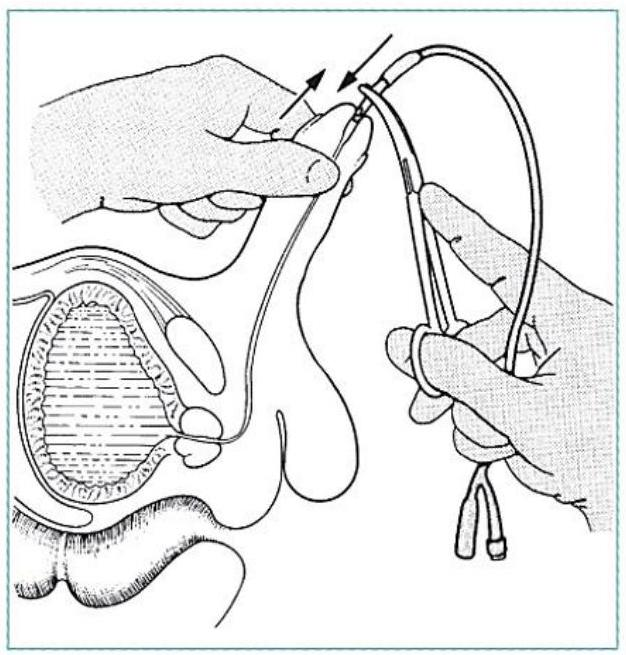
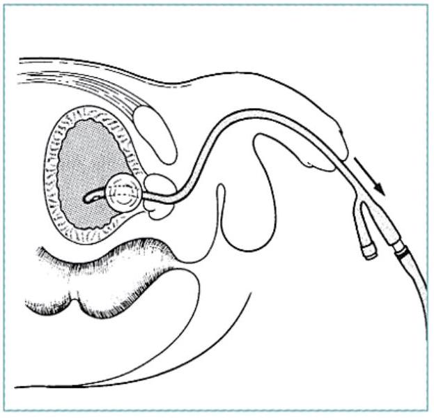

Disability, Exposure & The Secondary Survey
Disability or Damage
Checking for neurological damage: vital part of primary survey.
Abbreviated neurological examination:
- ALERT
- VERBAL - responsive to verbal stimulus
- PAIN - responsive to painful stimulus
- UNRESPONSIVE
Glasgow Coma Score (GCS)
| Eyes | Score | Verbal | Score | Motor | Score |
|---|---|---|---|---|---|
| Open spontaneously | 4 | Oriented | 5 | Obeys commands | 6 |
| Open to command | 3 | Confused talk | 4 | Localizes to pain | 5 |
| Open to pain | 2 | Inappropriate words | 3 | Withdraws to pain | 4 |
| None | 1 | Incomprehensible sounds | 2 | Flexor (decorticate) | 3 |
| None | 1 | Extensor (decerebrate) | 2 | ||
| None | 1 |
Total Score = Eye + Verbal + Motor Scores
GCS Interpretation
Eyes + Verbal + Motor Scores = GCS
- Severe head injury: GCS 8 or less
- Moderate head injury: GCS 9-12
- Mild head injury: GCS 13-15
GCS is to be repeated and recorded frequently. It is the best way to determine deterioration.
Head Injury Deterioration
- Unequal or dilated pupils may indicate increased intracranial pressure.
- Avoid sedation or analgesics as it interferes with neurologic examinations, reduces breathing (increased CO2 causes increased intracranial pressure).
- Bradycardia, hypertension may indicate worsening condition.
Exposure
- Remove all patient's clothing
- Examine whole patient
- Front and back; log roll carefully
- Do not allow patient to get cold (especially children)
Imaging
X-Rays
- Chest
- Pelvis
- Cervical spine
Ultrasound
- FAST scan
PHASE III: SECONDARY SURVEY
- Head Exam: Scalp, eyes, ears, Soft tissues
- Neck Exam: Penetrating injuries, Swelling or crepitus
- Neurological Exam: Glasgow Coma Score, Motor examination, Sensory examination, Reflexes
- Chest Exam: Clavicles, ribs, Breath, heart sounds
- Abdominal Exam: Penetrating injury, Blunt injury: nasogastric tube, Rectal exam, Urinary catheter
- Pelvis and Limbs: Fractures, Pulses, Lacerations, ecchymosis
URINARY CATHETER PLACEMENT
- Wash area with soap and water, retract prepuce
- Put on sterile gloves, apply bland antiseptic
- Check integrity of catheter balloon
- Lubricate catheter generously
- Hold penis vertically, slightly stretched
- Introduce catheter gently-don't force
- Urine in catheter confirms placement
- Inflate balloon slowly
- Replace prepuce


Reassessment & Monitoring
REASSESSMENT
- Always perform an ABCDE primary survey if patient deteriorates
- Signs of adequate resuscitation
- Slowing of tachycardia
- Urine output normalizes
- Blood pressure increases
MONITORING
- EKG monitoring if available
- Pulse oximeter
- Most widely used physiological monitoring device for heart rate, oxygenation
- Especially useful in anaesthesia, ICU
- Simple to use
- Should be minimum standard of monitoring in every surgical theatre
- Blood pressure
- Manually or automated machine